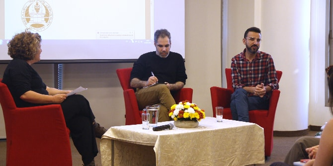
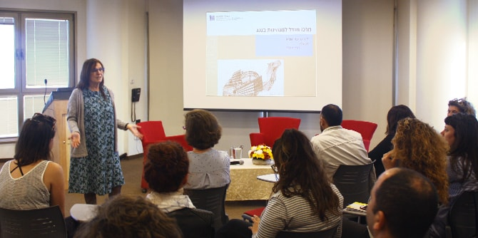

במסגרת המפגש למדו המשתתפים מהגר בוחבוט, עיתונאית טכנולוגיה באתרynet , על חדשנות טכנולוגית ועל המדיות האינטרנטיות השונות: כיצד תרבות נתפסת במדיות השונות, כיצד "לספר סיפור" מוצלח על עשייה תרבותית, וכיצד אפשר לאמץ שיטות טכנולוגיות חדשניות בתוך מוסדות תרבות.

אחר כך הרצתה פרופ' דנה אריאלי על "אמנות, חברה ופוליטיקה". אריאלי התייחסה לסוגיות של אוטונומיה באמנות ועד כמה האמנות נדרשת לתיווך ולתרגום, וכן לפוליטיקה ותרבות – כיצד תרבות הופכת ל"רכוש" ומאבדת ממשמעותה. לאחר הרצאתה קיימה אריאלי רב-שיח על תרבות ועשייה מקומית עם נדב משעלי, המייסד והמנהל של סינמטק אופקים, ועם עידן אבישר, מנהל בית ספר גודמן למשחק בנגב, בשאלות על מנהיגות מקומית ומנהיגות תרבות. שני מנהלי התרבות הדגישו את חשיבות הקהילה המתפתחת סביב העשייה התרבותית ואת חשיבות ההיכרות עם הקהל והמקום כחלק מהיצירה והעשייה האמנותית.
בסוף המפגש התכנסו המשתתפים בקבוצות דיון לחשוב יחד על ניהול, מנהיגות ותרבות. הדיונים בקבוצות יצרו תחושה שזו התחלת הבנייה של קהילת מובילי תרבות המעוניינים להמשיך ולהיפגש כדי ללמוד יחד ובעיקר לפתח שיח על תרבות, יצירה ואמנות מבוססת זהות מקומית המביאה בשורה לנגב כולו.

{kind=link}
{kind=link}